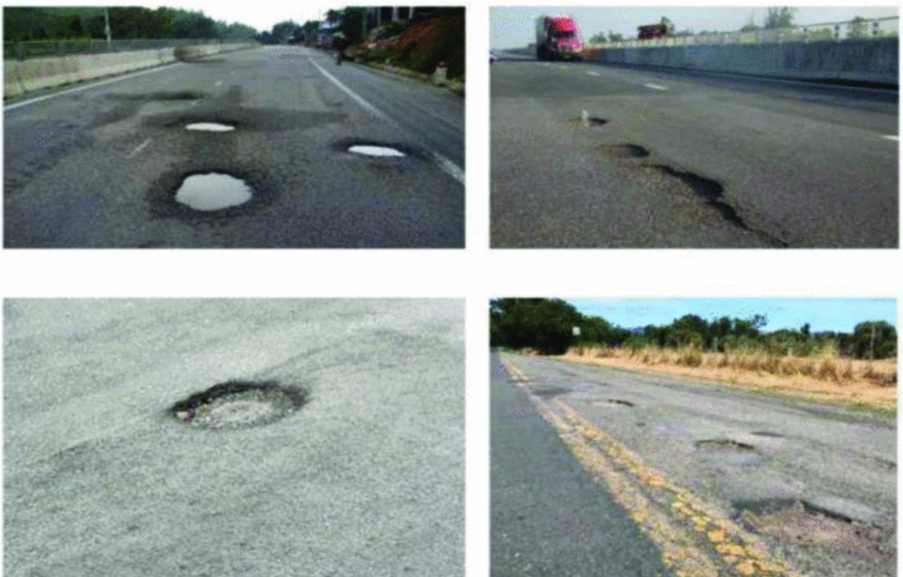

Challenges and Limitations
While the YOLOv8 model demonstrated exceptional performance in detecting road hazards, several challenges and limitations were encountered during the course of this research. These challenges highlight areas where further improvements are needed to refine the model and enhance its real-world applicability.
Limited Dataset Diversity
Despite including a variety of road hazards such as potholes, sewer covers, and manholes, the dataset used for this study could benefit from more extensive diversity. The current dataset is limited in terms of:
- Geographic diversity: The dataset primarily contains images from a specific region, leading to potential biases in road types and environmental conditions.
- Weather and Lighting Variations: While efforts were made to account for varying lighting conditions, there remains a lack of extreme weather scenarios such as heavy rain, snow, or fog. Such conditions could affect the model’s accuracy and require further training with more comprehensive datasets.

False Positives and Overfitting
Despite the inclusion of manholes and sewer covers in the dataset to reduce false positives, the model still exhibited occasional overfitting during training, leading to:
- False Positives: In some cases, the model mistakenly classified non-hazardous objects or road elements (such as wet patches or shadows) as potholes. This is particularly problematic in autonomous driving applications, where unnecessary evasive actions could pose risks to safety.
- Overfitting to Specific Road Conditions: The model occasionally struggled to generalize across different road types (e.g., highways versus urban roads), suggesting overfitting to the specific features of the training data.
Challenges with Small and Irregular Objects
Although YOLOv8 achieved high accuracy overall, detecting very small or irregularly shaped potholes remained a challenge. The difficulty lies in:
- Object Size Variability: Potholes, especially smaller ones, can be difficult for the model to detect consistently. This is compounded when these objects appear under poor lighting or are partially obscured by other elements (e.g., dirt, leaves, or puddles).
- Complex Object Boundaries: Irregular shapes and boundaries, especially in damaged or uneven road surfaces, presented challenges in accurate boundary detection, leading to occasional misclassifications or missed detections.
Environmental Challenges and Sensor Limitations
Although the model performed well in a controlled dataset, real-world conditions can introduce unpredictable variables that affect its accuracy. These include:
- Weather Impact: While fog, lighting, and some environmental factors were incorporated into the training process, extreme weather conditions such as heavy rainfall, snow, or glare from the sun can significantly degrade performance.
- Camera and Sensor Quality: Low-resolution cameras or sensors installed in vehicles may not capture the fine details required for accurate object detection, affecting the model’s real-time performance in detecting small potholes or distinguishing between similar objects.